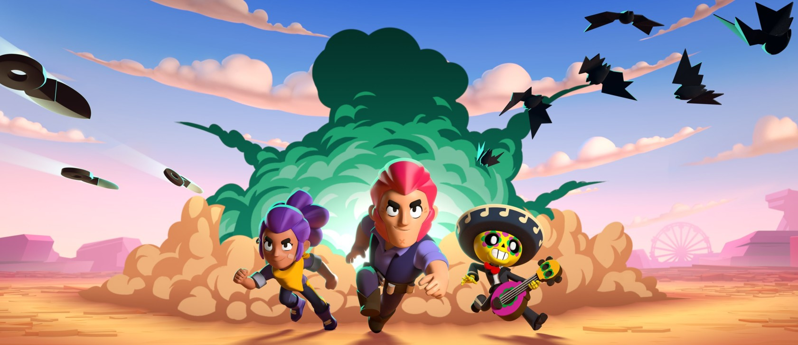

Brawl Stars é um jogo mobile multiplayer de ação em tempo real,
desenvolvido pela Supercell. É um jogo bastante popular,
conhecido por suas partidas rápidas e dinâmicas, com diversos modos de jogo e personagens carismáticos chamados Brawlers.
Brawl Stars é um jogo mobile divertido e viciante que oferece horas de entretenimento.
Se você gosta de jogos de ação rápidos e multiplayer, vale a pena dar uma chance a Brawl Stars.